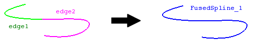

cfdmsh 4.0 documentation
cfdmsh 4.0 documentation cfdmsh 4.0 documentation


Fuses two edges.
This function cuts two edges into two large sets of vertexes, then creates a new single spline from them.
def FuseSplines( edges = [None], np = 20, curv = True, tol = 1e-7, single = True, add = True, dim = 1 ):

| Name | Description | Type | GUI selection [?] | Selection by name [?] | Recursive [?] | Default value |
|---|---|---|---|---|---|---|
| edges | The edges to fuse. | List of 2 Edges |
yes | yes | - | None |
| np | See here. In this case, the number of points is divided up between input edges according to their lenght. | Integer | - | - | - | 20 |
| curv | See here. | Boolean | - | - | - | True |
| tol | See here. | Float | - | - | - | 1e-7 |
| single | See here. | Boolean | - | - | - | True |
| add | See here. | Boolean | - | - | - | True |
| dim | See here. | Integer | - | - | - | 1 |
| dim Value [?] | single Value [?] | Type | Number | Name |
|---|---|---|---|---|
| 0 | False | Vertex | n | "FusedSpline (Vertex)" |
| 0 | True | Compound of Vertexes | 1 | "FusedSpline (Vertexes)" |
| 1 | - | Edge | 1 | "FusedSpline" |
from cfdmsh import * # To adapt to the cfdmsh installation method
vertex1 = geompy.MakeVertex(-40, 100, 150)
vertex2 = geompy.MakeVertex(75, 150, 75)
vertex3 = geompy.MakeVertex(125, 50, -50)
vertex4 = geompy.MakeVertex(50, -75, -125)
vertex5 = geompy.MakeVertex(-100, -75, 0)
curve1 = geompy.MakeInterpol([vertex1, vertex2, vertex3])
curve2 = geompy.MakeInterpol([vertex3, vertex4, vertex5])
AddToStudy([curve1, curve2], "curve")
fused_splines = FuseSplines([curve1, curve2])
fused_spline_vertexes = FuseSplines([curve1, curve2], dim = 0)
For better results, if coincident, both splines has to be as tangential as possible.
cfdmsh 4.0 documentation
tougeron-cfd.com © 2016